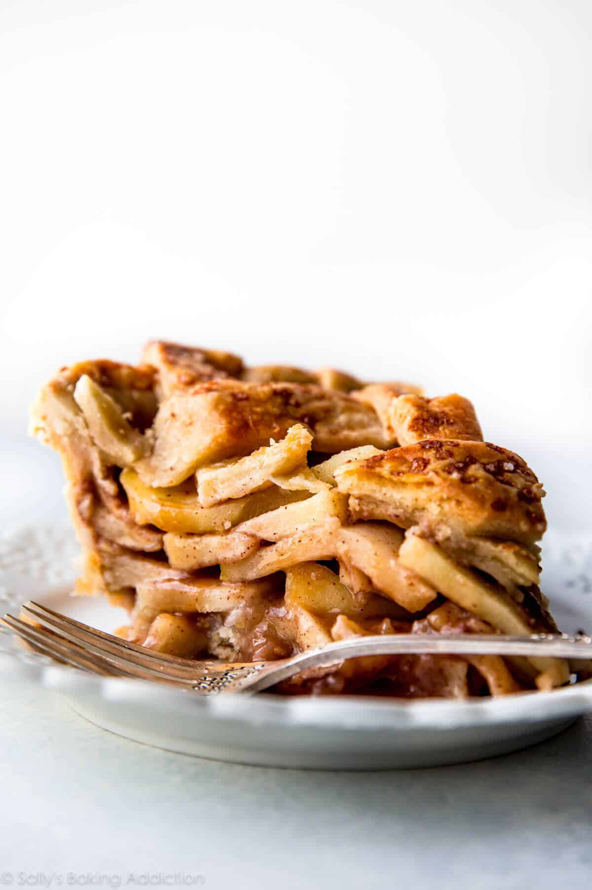

Apple Pie

About this dish
Apple pie is my favorite pie on the planet.
I’ve been making this deep dish apple pie recipe for years and easily consider it to be the best apple pie.
Ingredients
- 8–9 large apples, cored, peeled, and sliced into 1/4-inch slices (11–12 cups, or 1375–1500g total)*
- 1/2 cup (100g) granulated sugar
- 1/4 cup (31g) all-purpose flour
- 1 Tablespoon (15ml) lemon juice
- 1 and 1/2 teaspoons ground cinnamon
- 1/4 teaspoon each: ground allspice & ground nutmeg
- egg wash: 1 large egg beaten with 1 Tablespoon (15ml) milk
- optional: coarse sugar for sprinkling on crust
Steps
- Make the filling: In a large bowl, stir the apple slices, sugar, flour, lemon juice,
cinnamon, allspice, and nutmeg together until thoroughly combined. Set filling aside as
the oven preheats. This gives the filling a chance to rest.
- Preheat oven to 400°F (204°C).
- Roll out the chilled pie dough: On a floured work surface, roll out one of the discs
of chilled dough (keep the other one in the refrigerator). Turn the dough about a
quarter turn after every few rolls until you have a circle 12 inches in diameter.
Carefully place the dough into a 9×2-inch pie dish. Tuck it in with your fingers,
making sure it is smooth. Spoon the filling into the crust and discard the leftover
juices in the bottom of the bowl.
- Finish assembling: Remove the other disc of chilled pie dough from the refrigerator.
Roll the dough into a circle that is 12 inches diameter. Lattice the pie crust.
Crimp or flute the edges to seal.
- Lightly brush the top of the pie crust with the egg wash. Sprinkle the top with coarse
sugar, if using.
- Place the pie onto a large baking sheet and bake for 25 minutes. Keeping the pie in the
oven, turn the temperature down to 375°F (190°C) and bake for an additional 30–35
minutes. After the first 20 minutes of bake time, I place a pie crust shield on top of
the pie to prevent the edges from browning too quickly.
- Allow the pie to cool for 3 full hours at room temperature before serving. This time
allows the filling to thicken up. Cover leftovers tightly and store in the refrigerator
for up to 5 days.